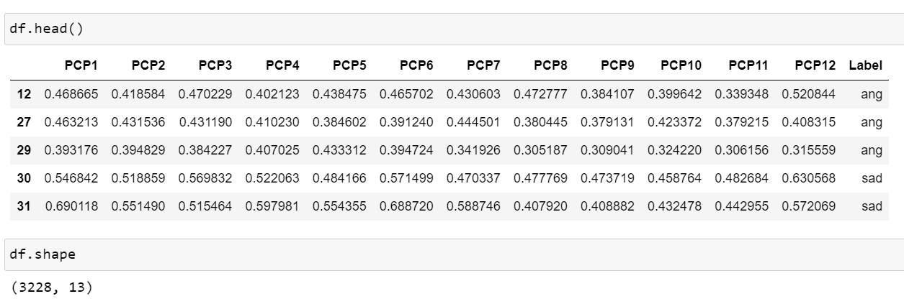

Basic Features
Audio features are description of sound or an audio
signal that can basically be fed in AI models to build intelligent audio bots.
Here are some of the basic audio features that can be extracted to perform emotion speech analysis:
- Pitch: The perceived highness or lowness of a sound. Features related to pitch help identify high arousal emotions
like anger or joy.
- Intensity: The loudness of the speech. Louder speech can indicate higher arousal emotions.
- Speaking rate: The speed at which words are spoken. Faster rates can correspond to excitement or panic.
- Voice quality: Properties related to the vocal tract shape and laryngeal articulators.
A tense/pressed voice can signal anger or fear.
- Spectral features: Attributes related to the speech frequencies and bandwidth. Wider bandwidth and more high-frequency
energy may indicate highly energetic emotions.
- Formants: The resonant frequencies of the vocal tract. Can distinguish between vowels and certain emotions.
- Mel-frequency cepstral coefficients (MFCCs): Represent the short-term power spectrum of sound.
Useful for speech/emotion recognition.
- Chroma vectors: Represent the harmonic content and musical aspect of speech. Related to emotion conveyed through voice melody.
- Energy/amplitude: Loudness patterns over time. Can indicate emphasis, stress, raises in voice volume.
In summary, pitch, intensity, timbre, tempo/rhythm, and descriptive spectral features provide information to recognize the underlying emotion being communicated through the voice. More advanced features like MFCCs can be used as input to machine learning algorithms.
Mel-Frequency Cepstral Coefficients
Following are the features extracted from audio files:
Link to the code: Code
In previous section (EDA), described aboult a spectrogram that shows how the energy of different pitches changes over time in a
sound recording. The x-axis shows time, while the y-axis shows frequency or pitch.
At any point along the x-axis, you can see the levels across the different pitches on the y-axis.
Warmer colors indicate more energy at those pitches and time points.
The mel scale is a perceptual scale of pitches that tries to mimic how humans hear sound.
High pitches and low pitches are not linear to our ear's perception.
The mel scale assigns numbers to frequencies in a way that better matches how humans discern pitch differences.
A mel spectrogram is thus a spectrogram that uses the mel scale on the y-axis rather than raw Hz frequencies.
This gives more resolution to the lower and mid-range pitches which is more akin to human perception.
The time-based patterns and relative energy between pitches conveys characteristic textures of sounds that our ear
recognizes holistically even without conscious frequency analysis.
What is MFCC
You know how every person has a unique voice?
Even if two people say the exact same word, you can tell them apart, right?
Well, MFCCs are special features that can capture the uniqueness of voices to tell them apart.
When you speak, your voice produces sound waves that vibrate at different speeds. These speeds
are called frequencies. Your voice has a special pattern of frequencies that other voices don't
have. MFCCs help highlight these special voice patterns like a fingerprint for sound!
Here's what happens step-by-step:
- Record a voice saying a word
- Figure out which frequencies are louder in that recording
- The loud frequencies create a frequency fingerprint
- Apply a Mel Filter to this fingerprint. Mel is like hearing frequencies as a human would.
- Use a Cepstrum analysis to capture unique voice patterns
So in a nutshell, MFCCs are like vocal fingerprints extracted using frequency and Mel scale analysis to identify voices.
They help machines understand different qualities of sound and speech.
Now to explain in technical terms, the information of the rate of change in spectral bands of a signal is given by its cepstrum.
A cepstrum is basically a spectrum of the log of the spectrum of the time signal.
The resulting spectrum is neither in the frequency domain nor in the time domain and hence,
it was named the quefrency (an anagram of the word frequency) domain.
The Mel-Frequency Cepstral Coefficients (MFCCs) are nothing but the coefficients that make up the mel-frequency cepstrum.
The cepstrum conveys the different values that construct the formants (a characteristic component of the quality of a speech sound)
and timbre of a sound. MFCCs thus are useful for deep learning models.
The Band Energy Ratio (BER) provides the relation between the lower and higher frequency bands.
It can be thought of as the measure of how dominant low frequencies are.
This feature has been extensively used in music/speech discrimination.
Source: https://devopedia.org/audio-feature-extraction
PCP
Following are the features extracted from audio files:
Link to the code: Code

Pitch: Imagine you're listening to someone talk, and their voice goes up and down.
These ups and downs correspond to the pitch of their voice, or how high or low it sounds.
Class Profile: Now, think of the different pitches in the person's speech as different "classes" or categories.
So, a pitch class profile is like a summary that tells
you how much of each pitch class (high or low) is present in the person's speech.
It's like looking at a graph that shows which pitches are used more or less frequently.
Now, in the context of speech emotion analysis:
1. Emotional Tone: Different emotions can be associated with different pitch patterns.
For example, a higher pitch might be associated with excitement or happiness, while a
lower pitch might be linked to sadness or seriousness.
2. Analysis: By creating a pitch class profile, researchers or algorithms can analyze the speech
and get an idea of the emotional tone. It helps in understanding and categorizing the emotional content of the spoken words.
In essence, pitch class profile is a tool used to break down and summarize the pitch patterns in speech to gain insights into the emotional aspects of communication.
Linear Predictive Coding
Following are the features extracted from audio files:
Link to the code: Code
LPC is applied to speech signals to capture and represent the unique features of the way someone speaks.
By analyzing these features, we can get insights into the emotional content of the speech.
For example, if someone is excited, their speech might have a faster pace and higher pitch, and LPC
helps in capturing and quantifying these characteristics.
In essence, LPC in speech emotion analysis is like using a tool to break down and understand the
specific elements in a person's speech that reveal their emotions. It's a way of turning the patterns
in speech into data that can tell us something about how the person is feeling.
In speech emotion analysis, the goal is to extract relevant features from speech signals
that can capture emotional content. LPCC coefficients provide a compact representation of the
spectral characteristics of speech signals, making them suitable for capturing distinctive features related to emotion.
By analyzing the variations in LPC across different speech segments or
utterances, researchers and practitioners can develop models to identify and classify
emotional states. These models may use machine learning techniques, such as support
vector machines, neural networks, or other classification algorithms.
It's important to note that while LPCC can be useful, speech emotion analysis often involves a
combination of various features and techniques to achieve better accuracy and robustness.
Other commonly used features in this context include pitch, energy, formants, and prosodic features.